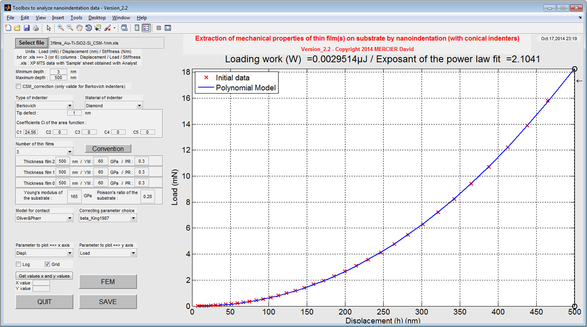
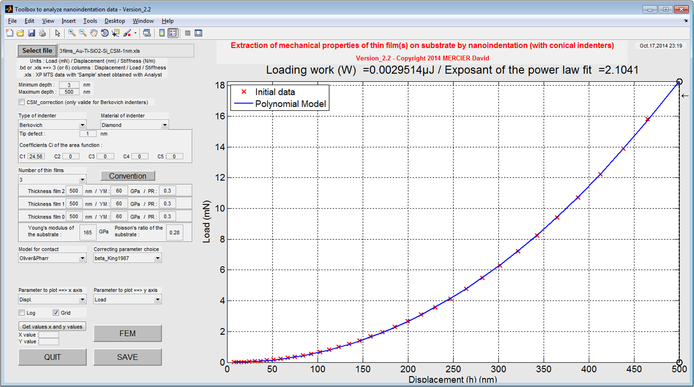
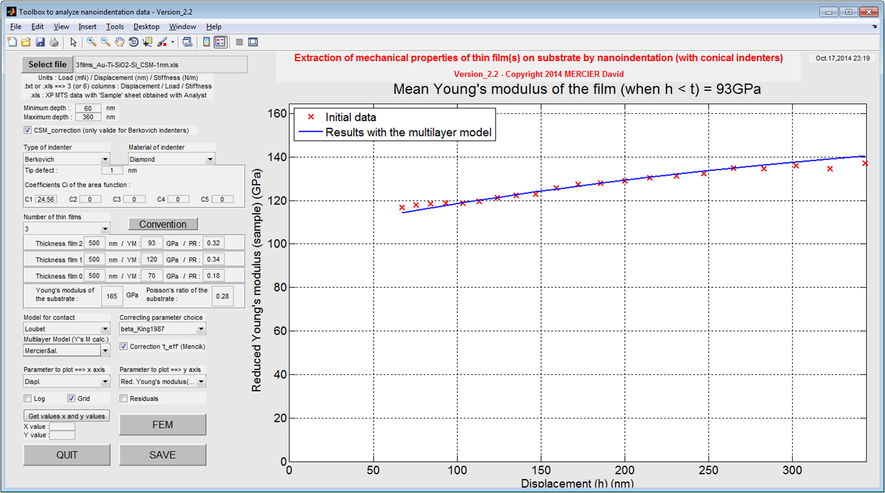

See here how to create / modify your YAML file..
"folder = D:\mwn2\matlab
Add the above folder with subfolders to the matlab search path? ([y](default)/n/rm(remove))"By clicking "y" for yes, you add the specified folder to the top of the search path.
"adding it" Click on pictures to enlarge.
Click on pictures to enlarge.A load-displacement curve is plotted (with a power law fit). The loading work is also given in the title of the plot.
It is possible to plot the stiffness (raw data) without setting the GUI for Young's modulus calculation.
 ⇒
Click on pictures to enlarge.
⇒
Click on pictures to enlarge.{kind=link}
- Select the lowest and the highest depth values (optional).
- Set the CSM correction (Berkovich indenter only !) (optional).
- Set the number of layers of your sample (0 = only bulk material, 1/2/3 = 1 to 3 thin layers on a substrate).
- Set the thickness, the Poisson's coefficient and the Young's modulus to each layer.
- Select the model to use for the contact displacement calculation and select the correction to apply.
- Select 'Red. Young's modulus(film+sub)' or 'Red. Young's modulus(film)' in order to plot the evolution of the reduced Young's modulus (raw calculation) of the sample vs. the evolution of the reduced Young's modulus (modeled) of the sample and/or of the thin film.
- Select the analytical bilayer or the multilayer model to use for the modelling of the reduced Young's modulus of the top thin film.
 ⇒
{kind=link}
 Click on pictures to enlarge.
Click on pictures to enlarge.